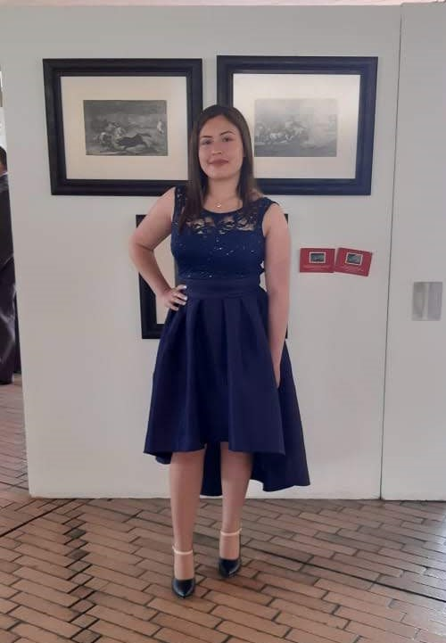

Lenguajes



Actualmente soy estudiante en el SENA de un Tecnologo en Analisis y Desarrollo de Sistemas de Información. (ADSI) Creo que la superación es una de las cualidades mas importantes para cualquier persona, se puede mejorar y aprender a diario.
01/2004 - 11/2007 - Primeros estudios en el Jardin Social Piedra Verde
01/2008 - 11/2019 - Transición, Primaria y Bachillerato en el Colegio Distrital A.LL.C
01/2017 - 11/2019 - Tecnico en Programación de Software
01/2020 - 06/2021 - Tecnologo en Analisis y Desarrollo de Sistemas de la Info